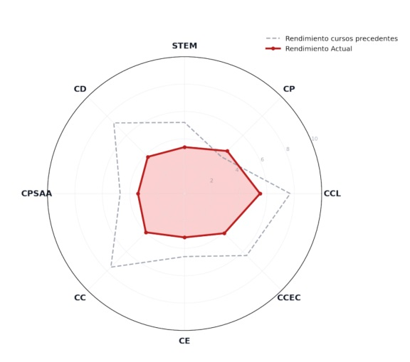
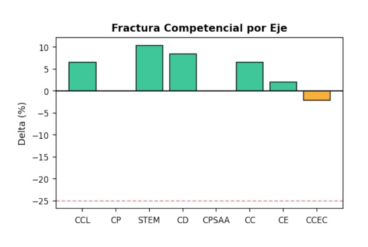
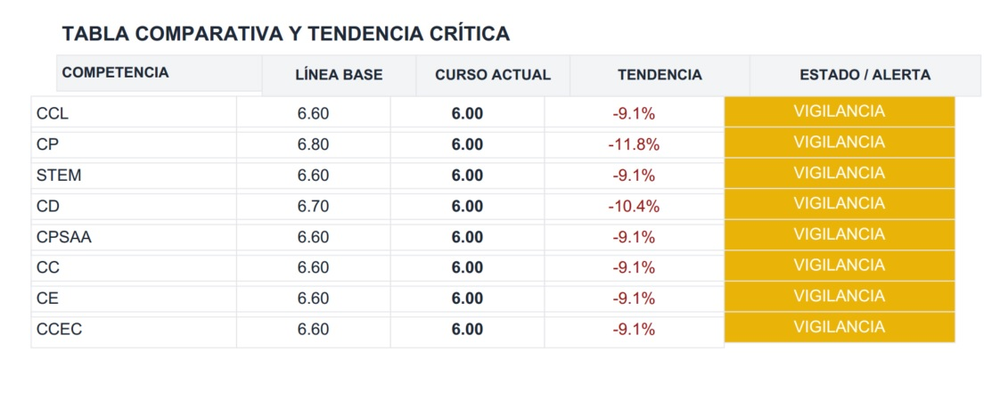
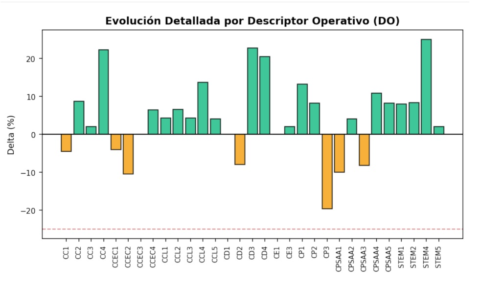

Diagnóstico dinámico: Deriva competencial y matriz de alertas preventivas
El valor diferencial del motor analítico de ALMENDRA reside en su capacidad para pasar de una evaluación estática del rendimiento a un análisis dinámico del aprendizaje. Mediante la parametrización de la deriva competencial, el sistema automatiza la detección temprana de riesgos académicos antes de que se consolide una fractura en el desarrollo del estudiante.

Cómputo de la Delta competencial ()
Para medir la evolución madurativa global de forma transversal y mitigar los sesgos propios del rendimiento puntual en una única materia , el software procesa las series temporales de las calificaciones indexadas en cada uno de los descriptores operativos del Perfil de salida.
El algoritmo ejecuta una comparación de variación porcentual estructurada en la siguiente relación matemática:
- Línea Base Histórica (n-1, n-2): Representa el perfil competencial consolidado y normalizado del alumno, obtenido tras aplicar el factor de olvido exponencial sobre los dos cursos anteriores.
- Calificación Actual (n): Representa el vector de rendimiento del último periodo evaluativo o curso en vigor incorporado al sistema.
Esta tasa de variación dota al sistema experto de una métrica predictiva limpia. Al operar de manera transversal sobre todo el árbol curricular, el diagnóstico refleja la maduración holística del estudiante en lugar de un hito académico aislado.

Umbrales criteriales y matriz de alertas automatizadas
Una vez obtenido el porcentaje de desviación o diferencial () para cada una de las competencias clave (CCL, STEM, CD, CPSAA, CC, CE, CCEC, CP) , el motor de ALMENDRA somete el valor a una lógica de control basada en umbrales estrictos predefinidos.
Esta evaluación clasifica el estado del alumno de acuerdo con la siguiente matriz diagnóstica:
| Deriva competencial () | Estado del sistema | Caracterización operativa y acción |
|---|---|---|
| CRÍTICO | Caída severa en el desempeño competencial. Requiere de intervención pedagógica e inclusión obligatoria en el informe diagnóstico. | |
| VIGILANCIA | Descenso moderado o estancamiento en la competencia. Se activa un estado de monitorización preventiva. | |
| ESTABLE | Progreso consolidado y dentro de la norma estadística. Continuidad de la programación didáctica ordinaria. | |
| % | AMPLIACIÓN | Incremento significativamente positivo en el rendimiento competencial respecto a su histórico. Requiere la aplicación de estrategias curriculares de enriquecimiento. |

Filosofía del modelo preventivo vs reactivo
La arquitectura analítica de ALMENDRA responde a un principio estrictamente preventivo. Los sistemas de alerta temprana buscan dotar al docente de la capacidad de anticipación operativa, permitiéndole modelar adaptaciones metodológicas antes de que se produzca una fractura en el proceso de enseñanza-aprendizaje.
Este enfoque de intervención proactiva optimiza la eficiencia del ecosistema educativo en dos vectores críticos:
- Optimización de recursos: La intervención reactiva, ejecutada una vez consumado el fracaso académico, exige un consumo drásticamente superior de recursos humanos, organizativos y materiales de apoyo por parte del centro del profesorado.
- Mitigación del sobreesfuerzo cognitivo: Actuar antes de la caída severa previene la frustración y el desgaste del estudiante que ya manifiesta indicios latentes de dificultad, facilitando una tracción adaptativa más natural y duradera.
